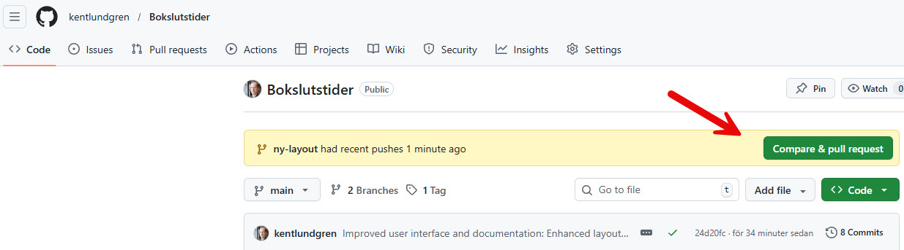

💡 Vad är en Git Branch?
Branch = Gren
En branch är som en parallell version av ditt projekt där du kan experimentera och göra ändringar
utan att påverka huvudversionen (main/master).
Så fungerar branches:
main (original)
→
ny-layout (kopia)
✅ Main är säker och oförändrad
🎨 Du experimenterar i ny-layout
🔄 När klar: Merge tillbaka till main
Fördelar med branches:
- ✅ Säkerhet: Main-versionen påverkas inte av dina experiment
- ✅ Frihet: Testa vilda idéer utan risk
- ✅ Organisation: Olika funktioner i olika branches
- ✅ Ångra lätt: Fungerar inte? Kasta branchen!
- ✅ Samarbete: Flera personer kan jobba parallellt
🌱 Skapa en utvecklingsbranch
Steg 1: Öppna PowerShell
# Windows-tangenten → skriv "PowerShell" → Enter
Steg 2: Gå till projektet
cd "d:\VåraFiler_primära_på_SSD\Kent_dokument\Data\HTML\kentlundgren_se\arbete\SK\Bokslutstider"
Steg 3: Skapa och byt till ny branch
# Skapa branch och byt till den direkt
git checkout -b ny-layout
# Alternativt: Skapa först, byt sedan
git branch ny-layout # Skapa
git checkout ny-layout # Byt till
Steg 4: Verifiera att du är på rätt branch
git branch
# Du ska se:
# main
# * ny-layout ← Stjärnan visar att du är här!
✅ Nu är du redo! Allt du gör sparas i ny-layout-branchen.
Main är orörd och säker.
🔄 Arbetsflöde under utveckling
1. Gör ändringar i Cursor
- Öppna och ändra filer som vanligt
- Testa i webbläsaren (öppna index.html)
- Experimentera fritt - main är säker!
2. Spara ändringar ofta med commits
# Se vad som ändrats
git status
# Lägg till alla ändringar
git add .
# Committa med beskrivande meddelande
git commit -m "Uppdaterat header-design med nya färger"
# Pusha till GitHub (första gången på ny branch)
git push -u origin ny-layout
# Senare pushes (när origin är satt)
git push
💡 Tips: Committa ofta med små, logiska ändringar.
T.ex. "Ändrat färgschema", "Justerat layout för mobil", "Fixat bug i navigation".
3. Byta mellan branches
# Tillbaka till main (original-versionen)
git checkout main
# Tillbaka till utveckling
git checkout ny-layout
# Lista alla branches
git branch
⚠️ Viktigt: Committa ALLTID innan du byter branch!
Om du har osparade ändringar kan de gå förlorade.
🔧 Användbara Git-kommandon för branches
| Kommando |
Vad det gör |
git branch |
Lista alla branches (stjärnan visar var du är) |
git branch namn |
Skapa ny branch (men byter inte till den) |
git checkout -b namn |
Skapa OCH byt till ny branch |
git checkout namn |
Byt till existerande branch |
git status |
Se vilken branch du är på + ändringar |
git diff main..ny-layout |
Jämför skillnader mellan två branches |
git log --oneline |
Se commit-historik för aktuell branch |
git push -u origin namn |
Pusha branch till GitHub första gången |
git push |
Pusha uppdateringar (när origin är satt) |
✅ När du är klar och nöjd med ändringarna
Alternativ 1: Merge via PowerShell (snabbare)
-
Kontrollera att allt är committat
git status
# Ska visa: "nothing to commit, working tree clean"
-
Byt till main-branchen
git checkout main
-
Merge in din utvecklingsbranch
git merge ny-layout
-
Pusha uppdaterad main till GitHub
git push
-
(Valfritt) Ta bort utvecklingsbranchen
# Lokalt
git branch -d ny-layout
# På GitHub
git push origin --delete ny-layout
Alternativ 2: Merge via GitHub Pull Request (rekommenderas!)
-
Pusha din branch till GitHub
git push -u origin ny-layout
-
Gå till GitHub-repot
https://github.com/kentlundgren/Bokslutstider
-
Klicka "Compare & pull request"
(Gul banner som dyker upp efter push)

💡 Tips: Den gula bannern dyker upp automatiskt när du pushat en branch.
Klicka på den gröna knappen "Compare & pull request" (se röd pil i bilden).
-
Skriv beskrivning av ändringarna
Beskriv vad du ändrat och varför
-
Klicka "Create pull request"
-
Granska ändringarna
GitHub visar alla ändringar visuellt
-
Klicka "Merge pull request"
-
Uppdatera din lokala main
git checkout main
git pull
✅ Fördelar med Pull Request via GitHub:
• Visuell jämförelse av ändringar
• Dokumentation av vad som ändrats
• Möjlighet att revidera innan merge
• Säkrare för nybörjare
🆘 Om något går fel
Scenario 1: Vill kasta alla ändringar och börja om
# Byt till main (säker version)
git checkout main
# Ta bort utvecklingsbranchen helt
git branch -D ny-layout # -D = force delete
# Börja om från början
git checkout -b ny-layout-v2
Scenario 2: Ångra senaste commit (men behålla ändringar)
git reset --soft HEAD~1
# Filerna är fortfarande ändrade, men commit är borta
# Gör nya ändringar och committa igen
Scenario 3: Vill se vad som ändrats jämfört med main
# Jämför hela branches
git diff main..ny-layout
# Jämför specifik fil
git diff main..ny-layout -- index.html
Scenario 4: Merge-konflikt!
Om samma rad ändrats i både main och din branch får du en merge-konflikt.
Så löser du det:
1. Git markerar konflikten i filen med:
<<<<<<< HEAD
2. Öppna filen i Cursor
3. Välj vilken version du vill ha (eller kombinera)
4. Ta bort konflikt-markeringarna
5. Committa: git commit -m "Löst merge-konflikt"
🌟 Best Practices
✅ Gör såhär:
- Skapa en ny branch för varje ny funktion/experiment
- Ge branches beskrivande namn:
ny-layout, fix-bug-header, test-nya-farger
- Committa ofta med små, logiska ändringar
- Skriv tydliga commit-meddelanden
- Testa grundligt innan merge till main
- Håll main-branchen alltid i fungerande skick
- Pusha branches till GitHub som backup
- Ta bort branches när de är mergade
❌ Undvik detta:
- Jobba direkt på main för större ändringar
- Byta branch med osparade ändringar
- Glömma vilket branch du är på
- Mergea halv-färdiga funktioner till main
- Skapa för många branches samtidigt (bli inte överväldigad)
- Använda kryptiska branch-namn:
test, ny, temp
📝 Exempel: Komplett arbetsflöde
Scenario: Du vill testa en ny färgpalett
# 1. Skapa branch
git checkout -b nya-farger
# 2. Gör ändringar i Cursor (ändra CSS)
# 3. Testa i webbläsare
# Öppna index.html och se hur det ser ut
# 4. Committa ändringar
git add .
git commit -m "Testat nya färgpaletten - blå/grön tema"
# 5. Pusha till GitHub som backup
git push -u origin nya-farger
# 6. Fortsätt justera, testa, committa...
git add .
git commit -m "Justerat kontrast för bättre läsbarhet"
git push
# 7. Nöjd? Merge till main via GitHub PR
# Gå till GitHub → Create Pull Request
# 8. Efter merge: Uppdatera lokal main
git checkout main
git pull
# 9. Ta bort utvecklingsbranch
git branch -d nya-farger
📋 Snabbreferens - Kommandon att minnas
# ═══════════════════════════════════════════
# SKAPA & BYTA BRANCH
# ═══════════════════════════════════════════
git checkout -b branch-namn # Skapa + byt
git checkout branch-namn # Byt till existerande
git branch # Lista alla
# ═══════════════════════════════════════════
# SPARA ARBETE
# ═══════════════════════════════════════════
git status # Se ändringar
git add . # Lägg till allt
git commit -m "meddelande" # Committa
git push # Pusha till GitHub
# ═══════════════════════════════════════════
# MERGE TILLBAKA TILL MAIN
# ═══════════════════════════════════════════
git checkout main # Byt till main
git merge branch-namn # Merge in ändringar
git push # Pusha main
# ═══════════════════════════════════════════
# STÄDA UPP
# ═══════════════════════════════════════════
git branch -d branch-namn # Ta bort lokalt
git push origin --delete branch-namn # Ta bort på GitHub